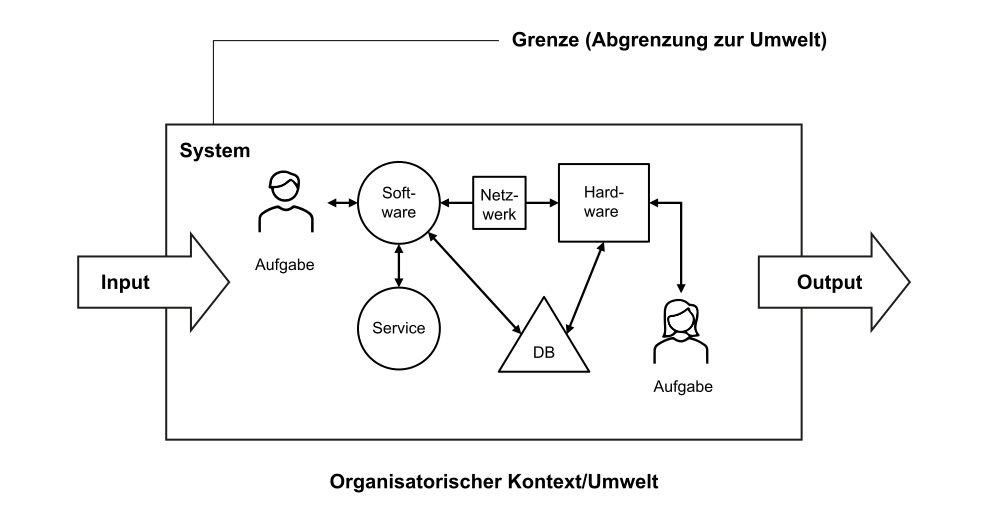
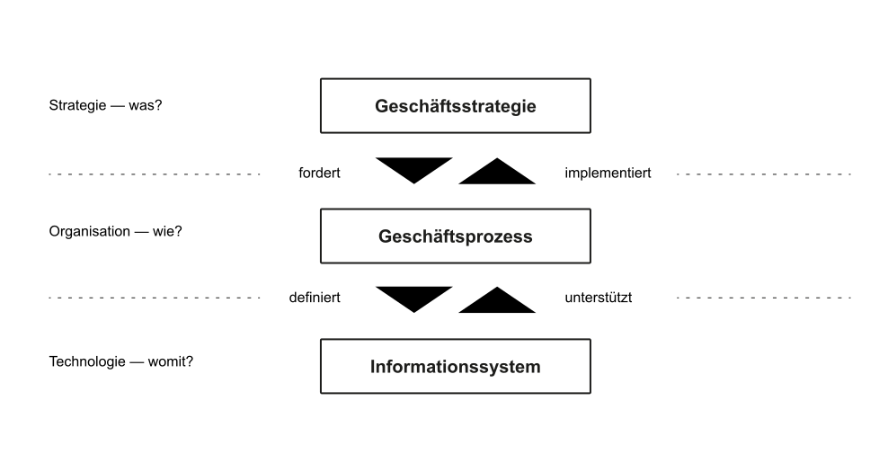

K4 Informationssysteme
Wie prägen Informationssysteme die Wertschöpfung?
Motivation
Lernergebnisse 🎯
Informationssysteme
Definition
Bei Informationssystemen handelt es sich um soziotechnische („Mensch-Maschine“) Systeme, die menschliche und maschinelle Komponenten (Teilsysteme) umfassen, insbesondere einer Aufgabenerfüllung dienen und zum Ziel der optimalen Bereitstellung von Information, Koordination und Kommunikation nach wirtschaftlichen Kriterien eingesetzt werden (Krcmar 2015, p. 8).
Informationssysteme ermöglichen also effektives und effizientes Informationsmanagement
Wesentliche maschinelle Komponenten von Informationssystemen sind der Informationstechnik (IT) zuzuordnen.
IT bezeichnet die Gesamtheit der zur Speicherung, Verarbeitung und Kommunikation zur Verfügung stehenden Ressourcen sowie die Art und Weise, wie diese Ressourcen organisiert sind (Krcmar 2015, p. 8).
Ein System besteht aus einer Menge von miteinander verknüpften Elementen, die sich insgesamt von ihrer Umgebung abgrenzen lassen. Wobei ein Element eines Systems ebenfalls ein System sein kann. Dann wird es auch als Subsystem bezeichnet (Alpar u. a. 2019), p. 15].
Systemklassifikationen
| Kriterium | Ausprägung | ||
|---|---|---|---|
| Entstehung | Natürlich | Künstlich | |
| Komponenten | Maschinell | Natürlich | Maschinell & natürlich |
| Existenz | Abstrakt | Konkret | |
| Umweltinteraktion | Offen | Geschlossen | |
| Verhalten | Deterministisch | Stochastisch | Zufällig |
| Anpassung | Adaptiv | Nicht-adaptiv | Zufällig |
| Steuerung | Mit | Ohne Rückkopplung |
Ein Unternehmen kann als Informationssystem bezeichnet und als solches modelliert werden. Dieses Gesamtsystem umfasst alle betrieblichen Abläufe und Tätigkeiten, die sich mit Informationen befassen. Das Gesamtsystem kann zudem anhan des Verwendungsszecks der Information in Subsysteme zerlegt werden. So lassen sich beispielsweise verschiedene Anwendungssysteme für die Administration und die Disposition unterscheiden. Administrationssysteme werden für die Speicherung und Verarbeitung von Massendaten zum Beispiel in der Finanzbuchhaltung eines Unternehmens eingesetzt, während Dispositionssysteme Entscheidungen beispielsweise im Rahmen der Bestellabwicklung oder der Materialbeschaffung unterstützen (Krcmar 2015, p. 8).
Visualisierung

Ein betriebliches Informationssystem verarbeitet Informationen (Input –> Output) und besteht aus folgenden Komponenten.
- Mensch: Aufgabenträger und Benutzer des Informationssystems
- Aufgabe: zu lösende betriebliche Problemstellung
- Informationstechnik: Hard- und softwaretechnische Umsetzung des Informationssystems
- Organisatorischer Kontext: betriebliche Umwelt, in die das Informationssystem integriert wird
Business Engineering
Einordnung
Neben der Entwicklung von neuen Informationssystemen und Geschäftsmodellen zielt die Wirtschaftsinformatik auch darauf ab, Unternehmen bei Veränderungsvorhaben zu unterstützen, die durch neue Informationssysteme und Geschäftslösungen notwendig sind (Leimeister 2021, p.14).
Diese Aktivitäten lassen sich unter dem Begriff Business Engineering zusammenfassen.
Definition
Das Business Engineering bezeichnet die ingenieurmäßige Vorgehensweise bei der Gestaltung von Veränderungsvorhaben in Unternehmen des digitalen Zeitalters unter Berücksichtigung von Unternehmensstrategie, Geschäftsprozessen und betrieblichen Informationssystemen (aufbauend auf Leimeister 2021, p.14).
Business Engineering leitet die Unternehmen im Übergang vom Industrie zum digitalen Zeitalter. Neben Veränderungen der Umwelt (Märkte, Kunden, Werte etc.) geht der Business Engineering Ansatz davon aus, dass insbesondere Innovationen aus dem Bereich der IT neue Geschäftslösungen ermöglichen.
Das Business Engineering zielt darauf ab, den kompletten Prozess von der Strategiefindung, der folgenden Gestaltung von Geschäftsmodellen, bis hin zur Organisations- und Systementwicklung zu begleiten. Außerdem werden Veränderungen kontinuierlich betrachtet und das Unternehmen koninuerilich weiterentwickelt.
Aspekte des Business Engineerings
- Transformationsmanagement: Ermöglichung und Begleitung der Veränderungsprozesse in Organisationen (bspw. Aktzeptanz neuer Informationssysteme)
- Trennung der Gestaltungsebenen: Zur Strukturierung der Veränderungsaufgaben sollten unterschiedliche Ebenen als Gestaltungsdimensionen betrachtet werden (Strategie, Organisation, Technologie)
- Ganzheitlichkeit: Um notwendige Veränderungen erfolgreich zu idenzifizieren und zu gestalten werden unterschiedliche Perspektiven und Methoden benötigt
- Ingenieurmäßiges Vorgehen: Die Veränderungen werden methodisch und modellbasiert entiwckelt und implementiert
Visualisierung

Die Vorlesung folgt dem Ebenen-Modell des Business-Engineerings und führt so wesentliche Gestaltungselemente der Wirtschaftsinformatik und des Informationsmanagements ein.
- Geschäftsstrategie
K2Digitales ZeitalterK9IT-ManagementK10Digitale Geschäftsmodelle
- Geschäftsprozesse
K7GeschäftsprozessmanagementK8Prozess-Modellierung
- Informationssystem
K3ITK4, K5DatenbankenK6Anwendungssysteme
Oftmals wird nicht direkt mit einem System, sondern mit einer Abbildung dieses Systems, einem Modell, gearbeitet.
Ein Modell ist das Ergebnis eines Konstruktionsprozesses, das die Wahrnehmung von Inhalten eines ausgewählten Gegenstands zweckorientiert repräsentiert.
In Modellen wie dem Business Engineering Modell werden die für den benötigten Zweck nicht relevant angesehenen Eigenschaften eines Systems weggelassen. Ein solches Modell dient dazu, das zu analysierende System besser zu verstehen, zu steuern und experimentell verändern zu können, um neue Erkenntnisse zu gewinnen.
Gestaltungsebenen
Das Business Engineering Modell reduziert das System Unternehmen auf drei Ebenen:
- Geschäftstrategie (was?): Festlegung der Ziele des Unternehmens bzw. der Einheit (u.a. Positionierung im Wettbewerb und Wertschöpfungsnetzwerken).
- Prozess (wie?): – Festlegung der organisatorischen Abläufe und Strukturen, die die Erreichung der strategischen Ziele ermöglicht (u.a. Verantwortlichkeiten, Berichtswege, Aktivitäten und Abläufen, Informationsbedarfe und -flüsse).
- Informationssystem (womit?): Festlegung des Einsatzs von Informationssystemen und der Beschaffenheit der Softwarekomponenten, Datenstrukturen sowie Hardwarekomponenten.
Die übergeordnete Ebene definiert jeweils Anforderungen an die untergeordnete Ebene. Die jeweils Ebene unterstützt die übergeordnete Ebene (Österle 2007).
Übungen ✏️
Lernkontrolle 🧐
Literatur 📚
Fußnoten
Drucken bzw. als PDF exportieren: Wenn Sie die Folien ausdrucken oder exportieren möchten, öffnen Sie die Präsentation, drücken Sie
eauf Ihrer Tastatur und dannDrucken(als PDF).↩︎